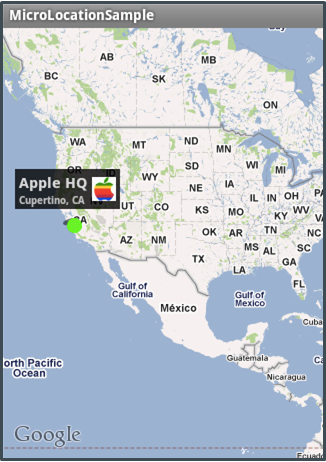

Using Location Services
Building Native Mobile Apps With Appcelerator Titanium
Module time: 1:30(30 mins teach, 60 mins lab)
Objectives
- Learn to use GPS positioning in your applications
- Use forward and reverse geo-coding
- Integrate native maps
- Use custom map annotations
GPS positioning in your apps
Forward & reverse geocoding to convert addresses to lat/long coords
or convert lat/long coords to addresses
Include native maps in your apps
Customize map annotations
Overview
Location APIs can be used for everything from device positioning to augmented reality applications. Taking location into account is mobile's killer feature.

Location is one of mobile's killer features
Data delivery, augmented reality, mapping are all great features you can enable via location services
Geolocation Support in Titanium
Detect if geolocation support is available
Obtain once or continually monitor the user's location
Device Compass (if available)
Forward and reverse geo-coding
We'll look at platform specifics on the upcoming slides
iOS Geolocation
Must set Ti.Geolocation.purpose
Check for authorization before using
Primary configuration: Ti.Geolocation.accuracy property (e.g. ACCURACY_BEST)
Also Ti.Geolocation.distanceFilter
Based on those, iOS chooses provider and tunings
Accuracy constants are qualifiers like BEST, NEAREST_TEN_METERS, etc.
distanceFilter is in meters
Android Geolocation
Pre Ti2.0, Android followed the iOS model & methods
Ti2.0 adds specific Android features
Legacy, Simple, and Manual modes
Simple: enable with accuracy = ACCURACY_HIGH or ACCURACY_LOW
Manual: More control, more precision, more provider options
Implementing iOS model led to inefficiencies and inaccuracies
Simple mode is a compromise: easy to set up but not hugely accurate
Manual involves more work but can be very precise.
One-time geo fixes normally return a cached location on Android
Mobile Web Geolocation
Browser must support W3C Geolocation spec
Implementation & accuracy varies
User must grant permission
But, you can't change the message
Generally limited by the browser environment
That environment varies by device, operating system, and browser version.
Geolocation Gotchas
Continually monitoring GPS drains battery faster
Android emulator: GPS might not be enabled
Edit the AVD to add GPS support
Android emulator: no default location
Use DDMS to send location
Android: need API key from Google for maps
Maps demo
If you set a listener, especially on Android make sure to remove it when the app is backgrounded or closed
Used to have to delete/re-create the AVD. Can edit it to add GPS emulation
Demo — do on Android- Start Android emulator
- Open Maps — no user location available
- Open DDMS, send location
- In emulator, open Maps, location now available
** stop here — you can demo more about maps on the next slides
Geolocation Demo
Demo: Kitchen Sink Geolocation
You can (1st three bullets)
Forward: Address -> lat/long
Reverse: lat/long -> address
Must set geolocation purpose
User will be prompted
Demo: Kitchen Sink > Phone > Geolocation
Code: examples/geolocation.js
- purpose
- if(locationServicesEnabled==false)
- authorization
- getCurrentPosition() — single shot
- addEventListener and locationCallback function
- forward and reverse geo
- point out Android lifecycle events for managing GPS
Native Map Kits

Native maps provide zooming, scrolling, and different display types
Points of interest are added with Annotations (pins)
Support for drawing routes (iOS)
Can choose center point and initial display range
Embed or full screen maps
Routes on iOS, check the Q&A for an Android solution
More on Annotations
Annotations can be added on or after creation
Can customize:
- Pin image/color
- Title/Subtitle
- Right/Left Button
Can individually update pins, all are set at the same time
Adding Points of Interest (POI)
Create annotations prior to rendering the map or add dynamically after
Pins/annotations customizable
Gotchas:
- Need Google API extensions for Android
- Android: need a map key (free) see KitchenSink
Demo
KitchenSink:
Base UI > Views > Map View
examples/map_view.js
tiapp.xml — Google map keys
KitchenSink: Base UI > Views > Map View
- embedded map
- discuss annotation components
- map types
- zooming
- user location (no default on Android)
examples/map_view.js
- ~line 22 createAnnotation()
- ~line 60 createMapView()
- mapType reference API docs
- region: lat/long & delta
- userLocation
- annotations
- tiapp.xml
- Google map keys & link to get your own
Lab Goals
Add captured-at coordinates to a fugitive's record in the database
Lab Spec:
- Uninstall app
- Modify database to include capturedLat and capturedLong properties for GPS
- When a fugitive is captured, persist their location
- From the detail page, provide a native map which shows their position when they were captured.
wiki.appcelerator.org/display/td/270+Using+Location+Services
Uninstalling because database is changing
Demo app: TiBH270
li>Capture a fugitive- Explain location prompt (if it shows)
- On captured tab, view details
- Click Show on Map
- Click pin to show custom annotation
Solution Walkthrough
Code Walk through — TiBH270db.js- new database fields
- list() — new properties for lat/long
- bust() — new lat/long properties saved
ui.js- createMapWindow() function
- accepts _bounty which has lat/long data
- annotation
- createMapView()
- Geolocation.purpose
- createDetailWindow()
- changes to capture button event handler(one-time geolocation, call to bust() )
- New map button